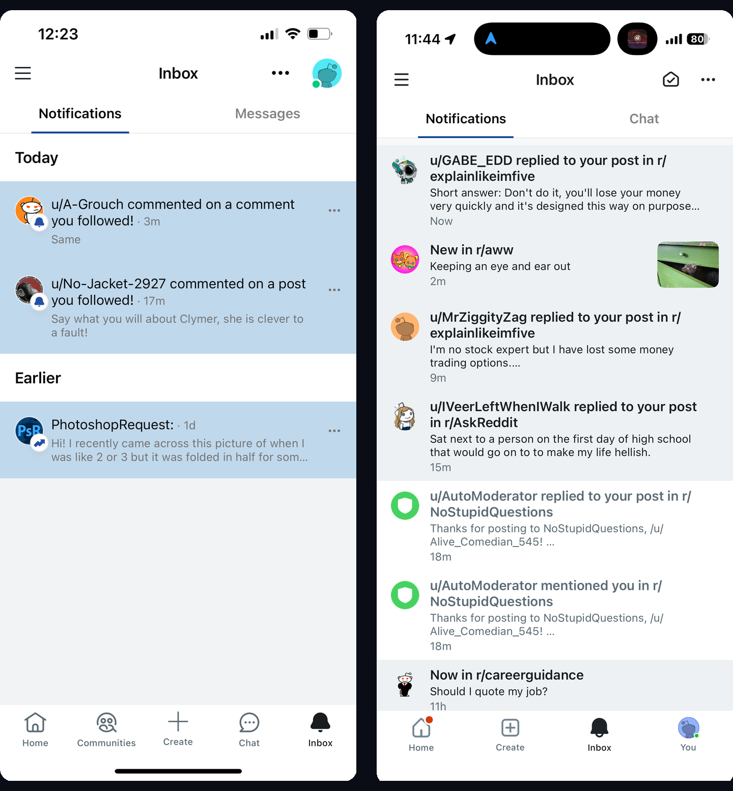
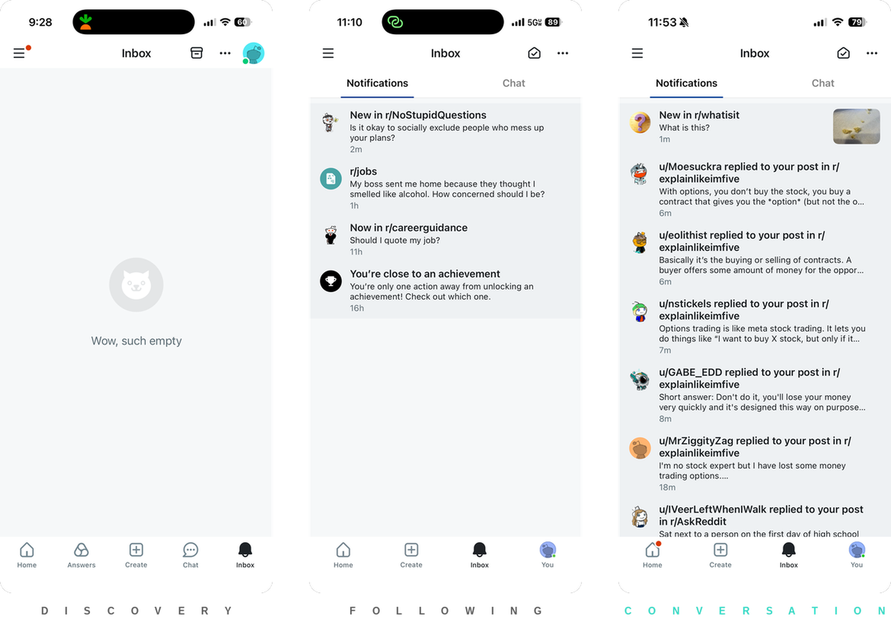
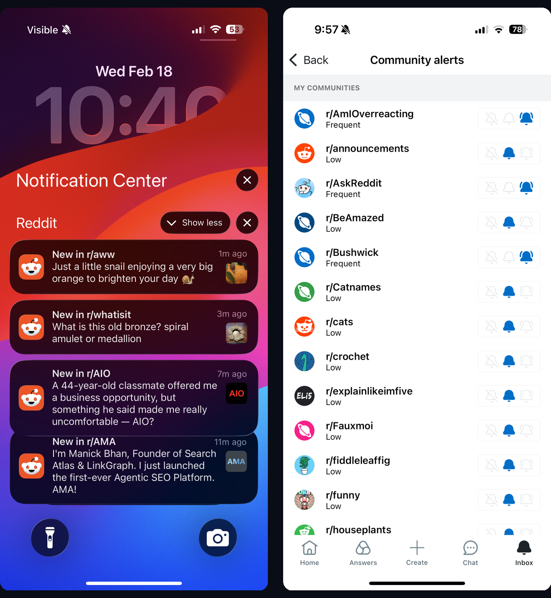
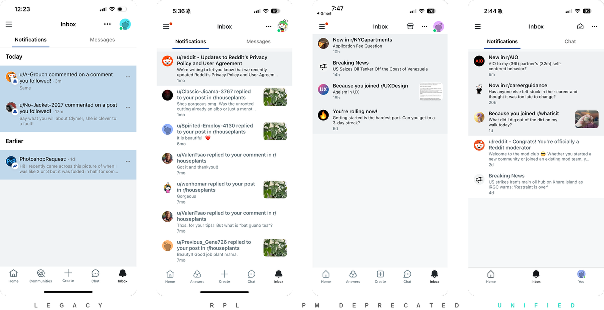

Notifications & Inbox
Summary
Challenge
Reddit communicates with hundreds of millions of users daily across four separate systems—Chat, Messages, Mod Mail, and Notifications—fragmented across native mobile, mobile web, and desktop with no connecting architecture and a system that didn’t behave as users expected.
Strategy
I built the segmentation framework, defined the inbox vision, and led the evolution from disconnected surfaces into a unified system that drives growth and engagement. Every stage was validated through fully operable prototypes tested with real users—shifting internal conversations from opinion to evidence.
Challenge
No overarching strategy
Beyond fragmentation, the surfaces had no overarching user strategy: limited inventory, limited controls, no prioritization model. Push notifications, the inbox, private messages, and chat operated independently—each with a distinct content type and no shared architecture.
Notification taxonomy gap
The four surfaces also had no shared notion of what a notification is. Across the platform, every type—from push recommendations to comment replies—flowed through the same pipe with the same weight. Without a taxonomy, there was no way to prioritize, no way to set delivery rules, no way to reason about what users should see.
Decaying retention
The inbox had a structural retention problem. By day 5 of the post-cohort window, inbox notification usage drops to 12% while overall Reddit retention holds at 40%—a 28-point gap that compounds across 7.5M daily inbox users. That gap is the opportunity the notification strategy targets.
Strategy
Strategy: establish a scaleable foundation; optimize for key user journeys.
Framework
The strategy sat on two axes: signal and tenure. By reading the signal Reddit has from a user and how long they’ve been on the platform, we could infer what experiences they were having and prioritize notification types accordingly. The inbox drives 2% of all comments on Reddit—that figure shifted leadership investment across the board.
The first decision was where to start. Comment replies were the highest-usage surface—core users with strong opinions about their flows. Changing that experience could disrupt the one thing the inbox was actually working for. The alternative: open net-new growth for subreddit following and new users with completely empty inboxes. Less data, more assumptions, required research—but the upside was coverage where we had next to none.
Users had a bias for action in the inbox. The more content was framed as personally actionable, the more likely they were to engage. The inbox wasn’t a destination—it was a switchboard that guided users through their session.
Foundation
Design system migration
The inbox wasn’t on Reddit’s design system. Every component was a one-off engineer build—growing technical debt, no quality assurance, and each new feature built from scratch. I designed the inbox row component as a scalable, reusable unit intended for distributed messaging surfaces across the platform, then migrated the full surface to the design system. Every project ran through a technical kickoff with the eng IC picking up the work—pressure-testing edge cases, building buy-in, and aligning on decisions before a line of code was written.
Unread system redesign
I rebuilt the unread system around progressive disclosure: a single numeric badge at the inbox level, a dot indicator at the tab level, typography plus subtle color at the row level. Every badge mapped 1:1 to a visible item—users never had to do math.
The migration introduced a less prominent unread color and click-through dropped. I used the data to identify the cause, partnered with the design systems team to adjust, and the fix influenced design system usage beyond the inbox.
Inbox simplification
I removed the overflow menu, icon-based message type indicators, and segmented inbox sections that pushed content below the fold. Icons had low comprehension—I replaced them with clear, embedded copy. Swipe actions and long press handled secondary options. Engagement held steady.
1. Build Habits
Contextualizing notifications
I added copy showing why a user received each notification. Click-through doubled compared to generic framing, and the surface could support higher volume without overwhelming users.

Recommendations as onboarding
For low-subscription users, the inbox became an onboarding engine. Recommendations surfaced contextually; push landing experiences converted discovery into lasting signal. DAU for that cohort lifted +1.4%; push click-through rose +6.4% across 7.5M daily inbox users.

Push-to-inbox connection
Only the latest push recommendation appeared in the inbox. Users expected a history of communications—removing older recommendations cut off discovery flows mid-stream. I restored that connection. Push good visits climbed +1% across 15 million daily receives.
2. Enable Curation
Pipeline separation
Subreddit subscriptions were entangled with recommendations on the back end. The system weighted a recommended notification the same as a subscribed update—prioritizing engagement metrics (post performance, CTR) over what users had explicitly asked for. A user subscribing to r/all updates would get a viral r/PlayStation recommendation instead. I worked with the ML team to untangle the pipeline—they ran experiments on signal weighting while I redesigned the preference model, each side’s findings reshaping the other’s direction until user signal won over algorithmic signal.

Preference architecture
The back end couldn’t define what updates a user could receive from a subreddit. Options were off, low, and frequent—even internally, the team couldn’t explain what those meant because they were wrapped in algorithmic metrics. I worked with the engineering lead through weekly syncs on capacity and feasibility to rearchitect preferences: no updates, popular posts, all posts. Eng held deep knowledge of system behavior and limitations—every conversation surfaced another constraint, but each one guided us toward a more precise model.
I then surfaced these preferences on the subreddit page itself and simplified subscription management in global settings—point of decision, not buried three screens deep.
Feedback loops
I shipped decay logic for breaking news, recommendations, and subreddit updates: if a user doesn’t open a notification type after a threshold, the system asks whether to turn it off. The ML team ran parallel experiments on signal thresholds while I defined the user-facing behavior—a continuous dialogue between design and engineering, each side’s findings reshaping the other’s approach.
Cross-channel coordination
I defined the relationship between channels: inbox as source of truth, push and email as delivery and re-engagement. Not all channels existed on all platforms—the system accounted for those gaps so users had control regardless of surface.
3. Create Focus
Surface consolidation
I consolidated four messaging systems into a single inbox. This required deprecating one internal system, migrating another, and navigating multiple intermediate states—each shipped as a fully functional experience, not a waypoint. Eng on this team were precise and construction-oriented—they caught edge cases I hadn’t, which made the late-stage design reviews a critical part of my process for making designs airtight before handoff.

Layout experimentation
I tested chronological, nested, and tabbed layouts. Users wanted to navigate the inbox as little as possible—scan, act, leave. The inbox was a switchboard: know where to go next and get there directly.
Pinned contributions
I designed a system that pins contributions to the top of the inbox—enough context to know what happened, then a direct path there. Subscriptions and discovery notifications that drove DAU stayed accessible below.
Navigation simplification
The unified inbox freed a slot in the bottom tab bar. Reddit used that space to experiment with new product surfaces and validate navigation models—a simplified 3–4 tab structure. Impact that extended well beyond the inbox.
Results
The segmentation framework became the foundation for notification design across Reddit. The unified inbox reshaped app navigation and enabled product experimentation in spaces that didn’t exist before.